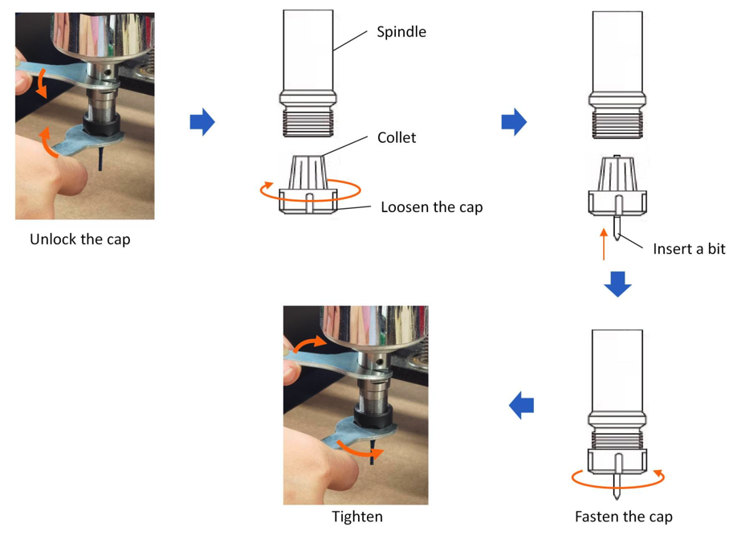

Step 3. Control the machine¶
"send the toolpaths and other machine instructions (GCODE) to the CNC's controller"

What is this step?¶
This step is the bridge between the digital file and the physical machine. We use a G-Code Sender (also called "control software") to talk to the CNC machine's "brain" (the controller).
Our FoxAlien Masuter Pro uses a controller that understands G-Code. We will use a program called CNCjs to connect our computer to the CNC via a USB cable, load our .nc G-Code file, and tell the machine "Go!"
Key Vocabulary¶
- G-Code Sender: The software that sends G-Code instructions to the CNC, line by line. We use CNCjs.
- Controller: The small "brain" or circuit board on the CNC machine (it runs GRBL firmware) that receives the G-Code and controls all the motors.
- Jog: Manually moving the machine's X, Y, or Z axis using the software's buttons. This is used to find your starting point.
- Zero Position (or Origin): The exact starting point for your job. You set this every single time. It's the
X=0, Y=0, Z=0spot on your material.
Workflow Steps¶
First time? You may also want to follow along with this video.
This video is a fantastic guide for all the physical steps of "Step 3: Control the Machine" and "Step 4: CNC the Maker". Watch it carefully. There are some details we will do differently, so also follow along with our Workflow steps below.
### Key Steps from the Video
Here is a breakdown of the key tasks you will perform, with timestamps from the video.
-
Methods to hold down your material (1:20)
- Your material must not move during a carve.
- The video shows using clamps (3:30) and the "blue tape and CA glue" method.
- The blue tape & glue method is excellent because it holds the material flat from underneath, so the router can't run into a clamp (7:46).
-
Install your bit (11:15)
- Make sure the CNC is unplugged or the spindle is off.
- Insert the bit into the collet (the part that grabs the bit).
- Make sure you push it in far enough, but do not let the "flutes" (the cutting edges) go up inside the collet.
- Tighten the collet nut securely with the wrenches.
-
Installation of your GRBL CNC machine (13:12)
- This is the one-time step of installing the "drivers" (software) that lets your computer talk to the CNC's controller. This has already been done for you on the CNC-STEAM headless computer the CNC is connected to.
-
Opening UGS software (15:54)
- The video shows connecting to UGS (Universal Gcode Sender). This is what we will do in our 3. Control the machine step, with a few differences with our CNC-STEAM setup.
-
Setting the zero position correctly (21:00)
- This is the most critical step. This video shows two methods:
- The Paper Method: Jog the Z-axis down until a piece of paper under the bit just starts to get stuck. This is Z=0.
- A Z-Probe: This is a small metal block that automates finding the Z=0. This is what we will use.
- Always remember to set your X, Y, and Z zero points before you start!
- This is the most critical step. This video shows two methods:
-
Loading and starting the job (25:41)
- Load your G-Code file into UGS and check the visualizer.
- Put on your safety glasses.
- Turn on the spindle.
- Click Send.
- Do not walk away. Watch the machine, especially for the first few minutes, to make sure everything is working as expected.
-
Secure your material to the spoilboard by clamp or glue
- Your material must not move during a carve.
- 3d printed clamps work well because if the toolhead moves beyond the material, the bit will easily chew up the clamp without breaking.
- The blue tape & glue method is excellent because it holds the material flat from underneath, so the router can't run into a clamp.

-
Install your Bit (End Mill)
The Bit is sharper than a knife!
Hold the bit only by the shank and never by the flute. The corner end of the flute is even sharper than a knife! A bit is designed to cut through steel like butter.
- Make sure the CNC is unplugged or the spindle is off.
- Insert the bit into the collet (the part that grabs the bit).
- Make sure you push it in far enough, but do not let the "flutes" (the cutting edges) go up inside the collet.
- Tighten the collet nut securely with the wrenches.

-
Connect to G-code Sender
- There are two versions depending if the computer is your own personal connected by USB or one from HCS managed by TechOps. Choose your method:
I am using my own personal computer connected to the CNC by USB cable...
- Download and Install Software You will need both Universal Gcode Sender (UGS) software and CH340 USB drivers downloaded and installed to your computer. Note that the HCS computers will be using CNCjs instead of UGS but they are nearly identical so the instructions below should still work fine.
- CH340 drivers
- Universal Gcode Sender (UGS), Platform version.
- Connect to the CNC:
- Turn on the FoxAlien Masuter CNC machine.
- Connect the computer to the CNC using the USB cable.
- Launch the gcode sender: Open UGS installed on your computer.
I am using a Hoonah School's computer managed by TechOps...
- Connect to the CNC Machine: The
CNC-Pro,CNC-3S, orCNC-minibox should be connected by USB to the target CNC machine and to a power supply by microUSB. There should be a linking red light inside the box.CNC-Proshould be powered ON for 15 seconds before the next step. - Turn on the CNC machine and wait 10 seconds.
- Launch CNCjs: From your computer, type in the URL: http://CNC-Pro in the top of Chrome browser window. Do not do a Google Search since Google does not know about our CNC machines!!

-
Establish Connection:
- In the "Connection" window, select the correct Port for the CNC. (It will usually be the only one that appears when you plug in the machine).
- Set the Baud Rate to
115200(this is the standard for our machine). - Click "Connect" (it looks like a plug icon). The status should change to "Online".
- (optional) Type
$$into the Console and the machine should report report its settings.
-
Load G-Code:
- Go to
File > Openand select the.ncor.gcodefile you exported from Easel. - Watch for any machine errors in the Visualizer! Is the machine doing what we want it to do? Finding machine errors now can head off disasters later!
- Go to
-
Set Your Zero (Origin):
- This is the most important part of machine setup. You must tell the machine exactly where your job starts.
- Use the "Jog" buttons in UGS to move the CNC's toolhead:
- Move the X and Y axes until the tip of the bit is directly over the bottom-left corner of your material.
- Click the "Reset X" and "Reset Y" buttons (or
Set X=0,Set Y=0). - Carefully "jog" the Z-axis down until the very tip of the bit is just touching the top surface of your material. (The "paper method" is great for this).
- Click the "Reset Z" button (
Set Z=0).
- Your machine now knows its
(0, 0, 0)starting point.